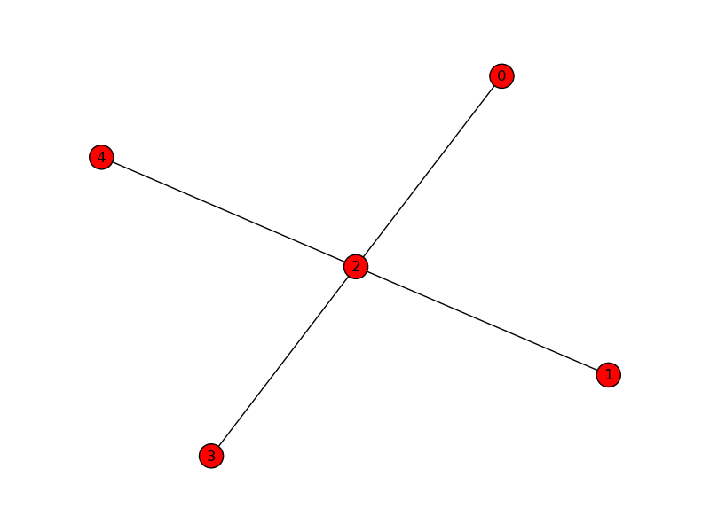

Usage example¶
This page introduces you to PyGraphML. If you want to skip this step and directly play with API documentation, go to pygraphml – API documentation.
Test if PyGraphML is working¶
First, open a Python console and try import PyGraphML
>>> import pygraphml
>>>
If there is no ImportError message, PyGraphML is well detected by
your python installation.
Create a graph¶
Let’s create a simple graph with 5 nodes and some edges between this nodes:
from pygraphml import Graph
# Create graph
g = Graph()
n1 = g.add_node("A")
n2 = g.add_node("B")
n3 = g.add_node("C")
n4 = g.add_node("D")
n5 = g.add_node("E")
g.add_edge(n1, n3)
g.add_edge(n2, n3)
g.add_edge(n3, n4)
g.add_edge(n3, n5)
Graph search¶
You can use breadth-first search and depth-first search:
nodes = g.BFS()
for node in nodes:
print(node)
nodes = g.DFS_prefix()
for node in nodes:
print(node)
Visualize a graph with NetworkX¶
If you have NetworkX installed, you can visualize the graph.
Note
Visualization is very basic and serves only to quickly check graph consistent.
It is very simple to visualize graph:
g.show()
You should see something like that:
Write a graph into GraphML file¶
Now you may want to write your graph into a GraphML file. This is a way:
from pygraphml import Graph
from pygraphml import GraphMLParser
# Create graph
g = Graph()
n1 = g.add_node("A")
n2 = g.add_node("B")
n3 = g.add_node("C")
n4 = g.add_node("D")
n5 = g.add_node("E")
g.add_edge(n1, n3)
g.add_edge(n2, n3)
g.add_edge(n3, n4)
g.add_edge(n3, n5)
parser = GraphMLParser()
parser.write(g, "myGraph.graphml")
Warning
Don’t forget to import GraphMLParser
GraphML file should look like that
<?xml version="1.0" ?>
<graphml>
<key attr.name="label" attr.type="string" id="label"/>
<graph edgedefault="directed" id="">
<node id="A"/>
<node id="B"/>
<node id="C"/>
<node id="D"/>
<node id="E"/>
<edge source="A" target="C"/>
<edge source="B" target="C"/>
<edge source="C" target="D"/>
<edge source="C" target="E"/>
</graph>
</graphml>
Read a graph from GraphML file¶
Now let’s learn how to read a graph from a GraphML file. We will take the previous generated GraphML file, load it in Python and display it with NetworkX:
parser = GraphMLParser()
g = parser.parse("myGraph.graphml")
g.show()
Nodes and edges attributes management¶
GraphML format has a flexible attributes management as PyGraphML. To add an attribute to a node or an item, simply use Python power:
g = Graph()
n = g.add_node('label')
# Add attribute
n['color'] = 'red'
# Read attribute
print n['color']
All attributes will be copied in GraphML file. As well when you read a GraphML file, attributes are available by the same way.

{kind=link}